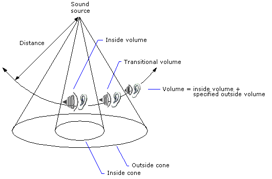

A sound with no orientation has the same amplitude at a given distance in all directions. A sound with an orientation is loudest in the direction of orientation. The model that describes the loudness of the oriented sound is called a sound cone. Sound cones are made up of an inside (or inner) cone and an outside (or outer) cone.
At any angle within the inner cone, the volume of the sound is just what it would be if there were no cone, after taking into account the basic volume of the buffer, the distance from the listener, the listener's orientation, and so on.
At any angle outside the outer cone, the normal volume is attenuated by a factor set by the application. The outside cone volume is expressed in hundredths of decibels and is a negative value, because it represents attenuation from the default volume of 0.
Between the inner and outer cones is a zone of transition from the inside volume to the outside volume. The volume decreases as the angle increases.
The following illustration shows the concept of sound cones.

Every 3D sound buffer has a sound cone, but by default a buffer behaves like an omnidirectional sound source, because the outside volume is not attenuated, and the inside and outside cone angles are 360 degrees. Unless the application changes these values, the sound does not have any apparent orientation.
Designing sound cones properly can add dramatic effects to your application. For example, you could position a sound source in the center of a room, setting its orientation toward an open door in a hallway. Then set the angle of the inside cone so that it extends to the width of the doorway, make the outside cone a bit wider, and set the outside cone volume to inaudible. A listener moving along the hallway will begin to hear the sound only when near the doorway, and the sound will be loudest as the listener passes in front of the open door.
An application sets the angles that define sound cones by using the IDirectSoundBuffer8::SetConeAngles method. The outside cone angle must always be equal to or greater than the inside cone angle.
To set the orientation of sound cones, an application can use the IDirectSoundBuffer8::SetConeOrientation method.
An application sets the outside cone volume by using the IDirectSoundBuffer8::SetConeOutsideVolume method.